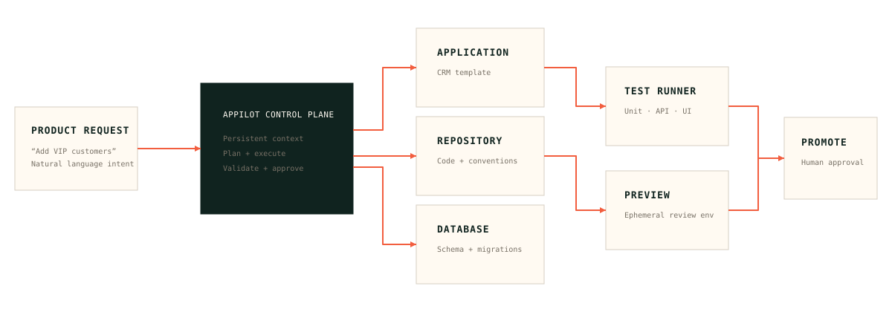

AI CRM
Profiles, pipeline, tasks, dashboards, and the clearest proof of the workflow.
Explore the demoAppPilot turns product requests into tested, reviewed, previewable, and deployable application changes.
AI made code generation faster. It did not make shipping trustworthy. AppPilot wraps a persistent engineering agent in the context, checks, permissions, previews, and human decisions that real software needs.
Explore the control systemSee how a product manager could move from an idea to a production-ready preview without manually editing a line of code.
The differentiator is the control system around the agent: persistent context, application-specific knowledge, validation, permissions, preview environments, and reliable promotion.
A PM describes the outcome in plain language. AppPilot turns intent into an explicit, inspectable engineering plan before any files change.
The showcase application is familiar enough to understand in seconds, but real enough to prove the control plane: roles, customer profiles, deals, tasks, search, dashboards, and an automated test suite.
View the architectureAppPilot connects the product surface to the engineering systems that make change safe. No black box. No leap of faith.

README, architecture, schema, conventions, and test strategy travel with the application.
Every change runs in a workspace that can be inspected, tested, and discarded.
Plans, diffs, findings, approvals, and promotion history stay visible to the team.
Software engineering discipline is not the tax on AI development. It is the product.
Role-aware access for PMs, engineers, and admins.
Unit, integration, API, and browser checks before promotion.
Change plan, diff, findings, approvals, and deployment history.
Rollback paths and the option to discard every preview.
Start from production-ready foundations, then let teams shape them through conversation. The control plane stays consistent as the domain changes.
Profiles, pipeline, tasks, dashboards, and the clearest proof of the workflow.
Explore the demoStock, suppliers, reorder points, and internal workflows shaped by the team.
Support, admin, and profile tools for the work happening behind the product.
“Do not build AI that can write code.
Build AI that can safely evolve software.”
AppPilot is a proposal for a new layer in the software stack: a persistent engineering partner with enough context to act, enough restraint to prove its work, and enough transparency for people to stay in control.
For founders, product leaders, and engineers thinking about what software development looks like after code generation.
hello@appilot.devShare what you are building and where the current workflow breaks down.
Talk through templates, engineering policies, and the first application to evolve.
Help turn a product concept into a safer way to ship real software.